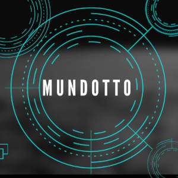

Neto, 27 anos, nascido em São Paulo, veio para o mundo Gamer devd a pandemia, buscou abrigo e a socialização digital como fuga dese triste acontecimento e percebeu que o Game preencheu esses vazios. Sendo assim, despertou a paixão de se lascar de riri, porque pro-play ele não é!
MundoOtto, lê-se Mundo Otto, derivado do seu personagem principal de Roleplay Otto Mund, um cara de Outro Mundo, é um projeto de inclusão a pessoas que não podem ter o acesso a jogos e ao mundo game. O objetivo deste projeto é ter a sua arrecadação e proporcionar a compra de setup para muios Otto's deste Mundo Gamer. A intenção é boa, bora e ajudar a por em prática?